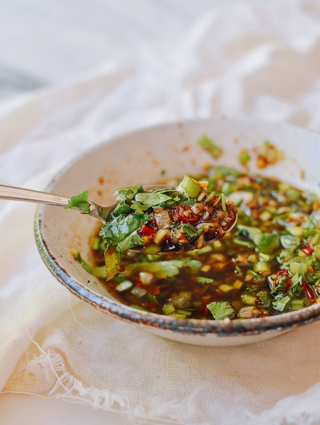

Chinese Cold 'Salad' Dressing

Craving a little spice to go with your steamboat? This Chinese Cold 'Salad' Dressing is an excellent way to impart additional flavour to your steamboat or hotpot meal. It is a must make for me anytime I have a shabu-shabu dinner and it is also very popular with my family, with some begging me for the recipe
Ingredients
- 4 cloves garlic, minced
- 3 thinly sliced ginger
- 2 scallions, chopped with white and green parts separated
- 3 thai chillis, chopped
- 3 tbsp vegetable oil
- 1 tbsp sichuan peppercorns
- 1.5 tsp sugar
- 2 tsp Chinese black vinegar
- 2.5 tbsp light soy sauce
- 1 tsp oyster sauce
- 0.5-1 tsp sesame oil
- 1/4 tsp salt, to taste
- 1/4 tsp five spice powder
- 1 tbsp cilantro, chopped; or to taste
Steps
- In a large heat-proof bowl, arrange the minced garlic, minced ginger, the white parts of the chopped scallion, and chopped Thai chilies so they are adjacent to each other at the bottom of the bowl (don’t messily pile them all on top of each other).
- Now infuse the Sichuan peppercorns in oil. In a small pot, heat 3 tablespoons of vegetable oil with the Sichuan peppercorns over low heat until fragrant, taking care not to burn the peppercorns.
- After about 10 minutes, remove the peppercorns using a fine meshed strainer or slotted spoon. Heat the infused oil just until it begins to smoke. Pour it carefully over the arranged aromatics in the bowl. It will bubble and sizzle! Carefully stir to evenly distribute the heat.
- Now add in the sugar, vinegar, light soy sauce, oyster sauce, sesame oil, salt and five spice powder. Mix well.
- Finally add in the green parts of the chopped scallion and the cilantro. (If pre-making the sauce, leave these last ingredients out and add them right before serving.)